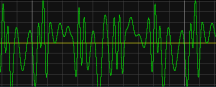
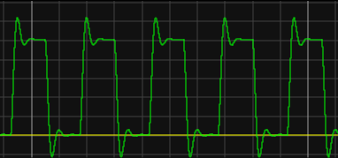
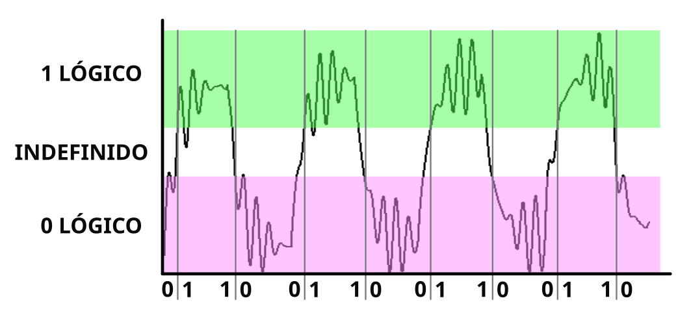

1. Senyals digitals¶
Fins al moment s’han estudiat els senyals analògics, que són signes de tensió o corrent que poden prendre qualsevol valor dins d’un rang.
Aquest és l’aspecte que pot tenir un senyal analògic:

Exemple de senyal analògic.¶
The digital signals, on the other hand, are signs that only take discrete values, for example 0 volts and 5 volts. Tots els altres valors de tensió s’ignoren com a no valids.
Aquest és l’aspecte que pot tenir un senyal digital amb algun soroll afegit:

Exemple de senyal digital amb soroll afegit.¶
Els senyals digitals es poden convertir en valors binaris i gestionar aquests números binaris matemàticament gràcies als circuits digitals. Això proporciona molts avantatges als senyals digitals.
Avantatges del senyal digital¶
** Immunitat al soroll. **
El soroll de petit valor no produeix errors en la informació del senyal.
** Duplicació sense pèrdues **
Els senyals digitals es poden duplicar sense perdre la qualitat, perquè es pot eliminar el soroll que s’introdueix al sistema digital.
** Detecció i correcció d’errors. **
Es pot calcular si un senyal digital s’ha degradat pel soroll (detecció d’errors) i es poden corregir errors que s’han produït per tècniques matemàtiques.
** Facilitat de processament del senyal. **
El senyal digital es pot processar fàcilment amb un programari adequat, que és capaç d’aconseguir més efectes que el processament analògic. Un exemple d’aquest processament digital és el conegut “auto-sindicat <https://es.wikipedia.org/wiki/auto-tenne>`__.
Quantificació digital¶
La quantificació digital és el procés pel qual un senyal es converteix en valors binaris.
{kind=link}

Definició de valors lògics en un senyal de soroll.¶
Simulació¶
A continuació, es pot veure la simulació d’un senyal de dades digital amb tensions entre 0 i 5 volts, que es deteriora quan s’afegeix soroll a la transmissió i finalment es recupera eliminant de nou el soroll amb un comparador senzill amb histèresi (Trigger Schmitt).
Exercicis¶
Dibuixeu un senyal analògic i un senyal digital.
Què són diferents?
Quins avantatges presenten els senyals digitals?
Què és la quantificació digital?
Expliqueu amb les vostres paraules què passa al circuit simulat.
Modifiqueu el senyal FM al simulador per tenir 3 tensió màxima. Què passa amb el senyal digital recuperat?
Dibuixeu la forma del senyal digital recuperat i indiqueu al gràfic el problema que presenta.